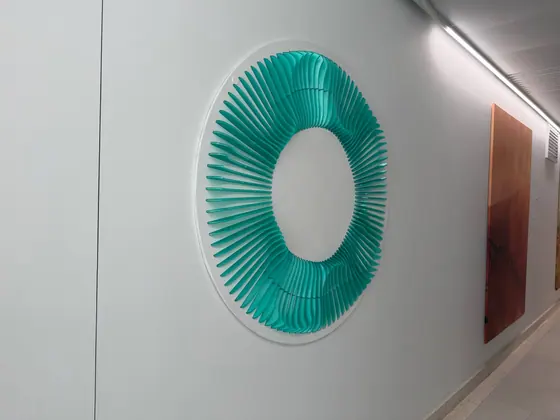
2 кадраГалерея проектов
Фотографии, эскизы и визуализации из подборки Фёдора Паршина.
Арт-объекты
6 изображений


Дизайн интерьеров
13 изображенийЖилые интерьеры


Общественные пространства


Эскизы и чертежи


Макетирование
8 изображений


Награды
15 изображений
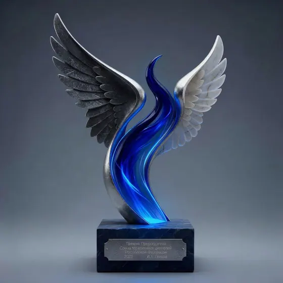
3 кадраКрылатая награда

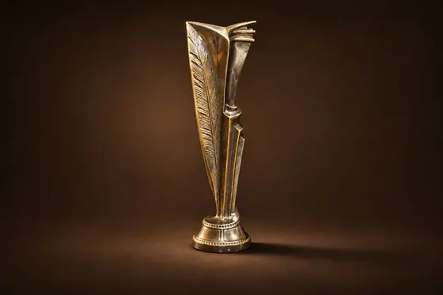
2 кадраВертикальный кубок

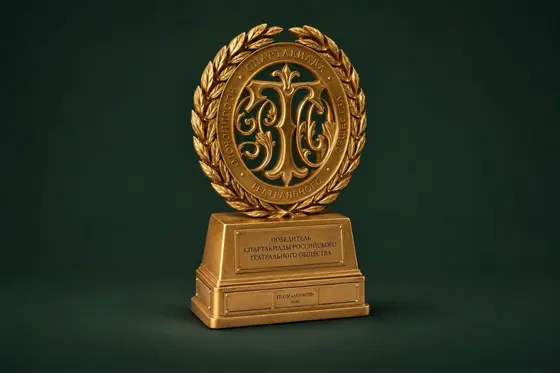
2 кадраНаграда с монограммой

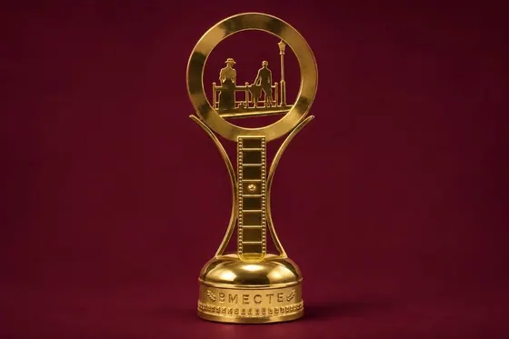
2 кадраКубок с архитектурным силуэтом

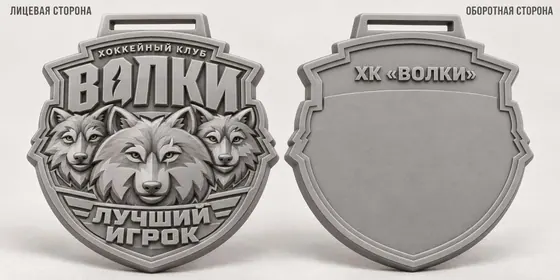
Медаль «Волки»
Эскиз лицевой и оборотной сторон
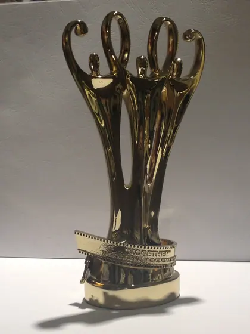
Ажурный кубок

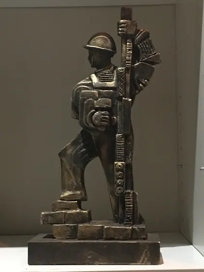
Награда с фигурой

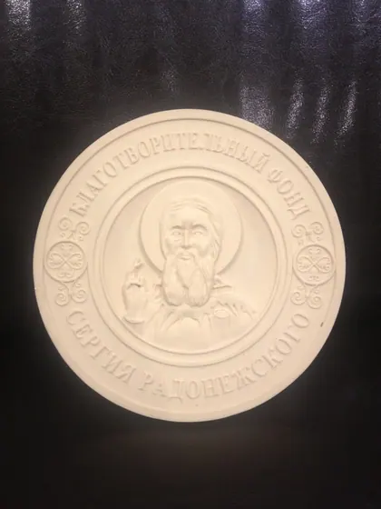
Портретный медальон

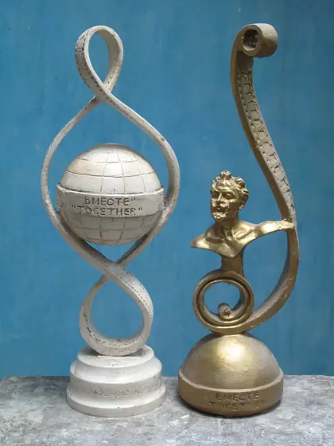
Две скульптурные награды

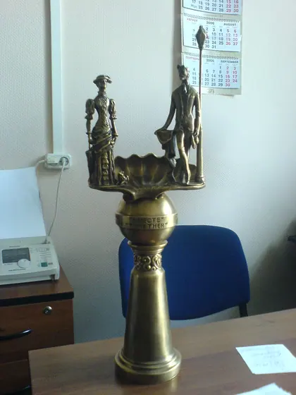
Приз «Дама с собачкой»
Парковая и монументальная скульптура
16 изображений
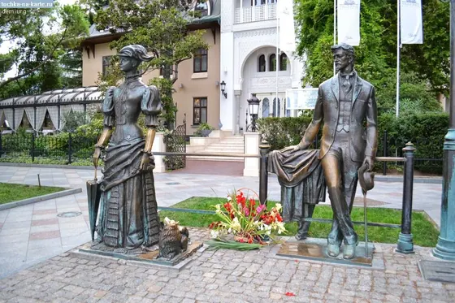
Две фигуры на городской площади

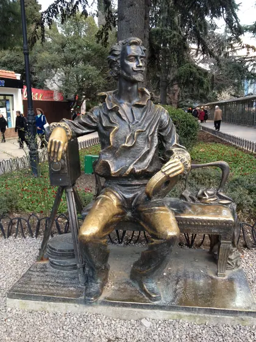
Фигура на скамье

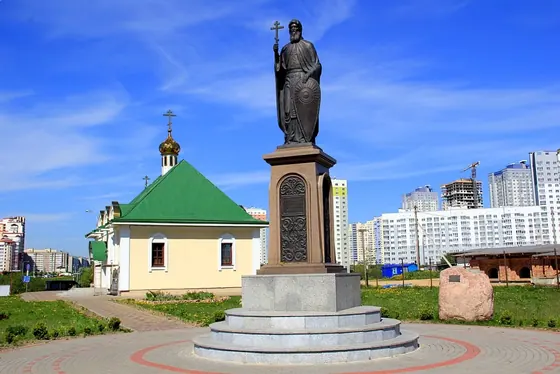
Памятник у храма

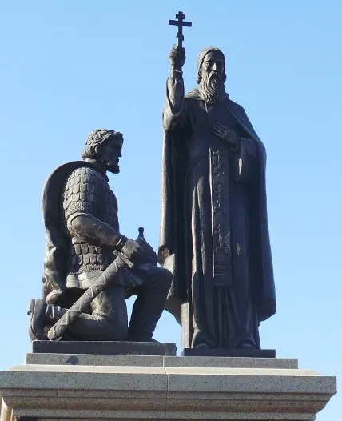
Двухфигурная композиция

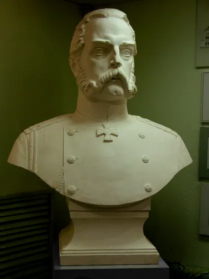
Портретный бюст

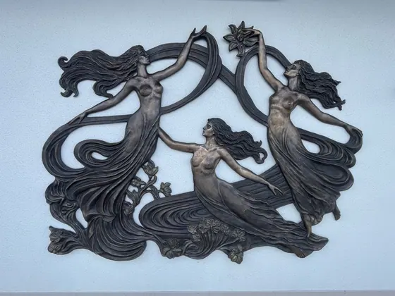
Декоративный рельеф

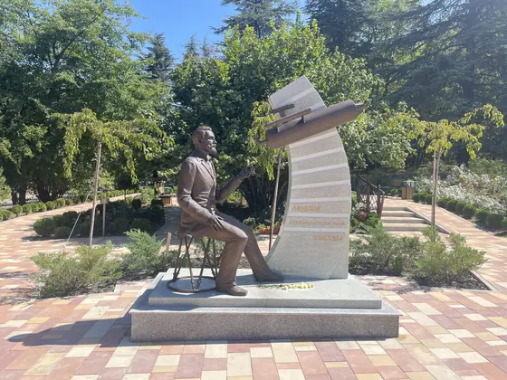
Фигура у изогнутой стелы

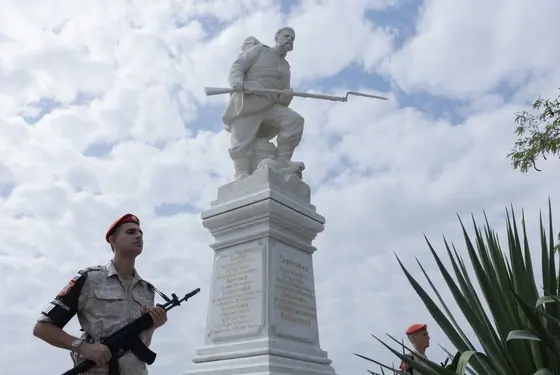
Памятник воину

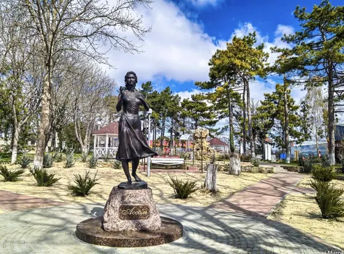
Фигура на камне

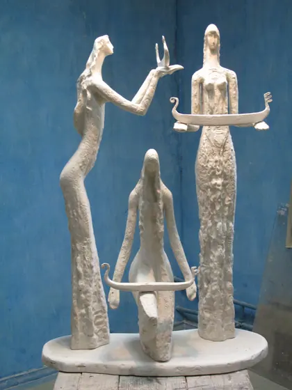
Три фигуры

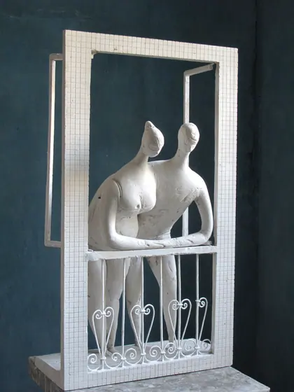
Две фигуры в раме

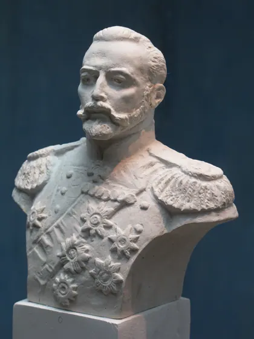
Бюст в мундире

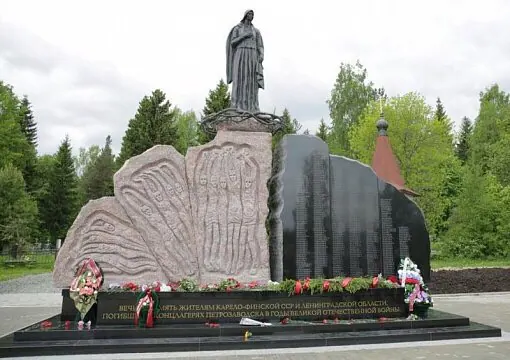
Мемориальная стена

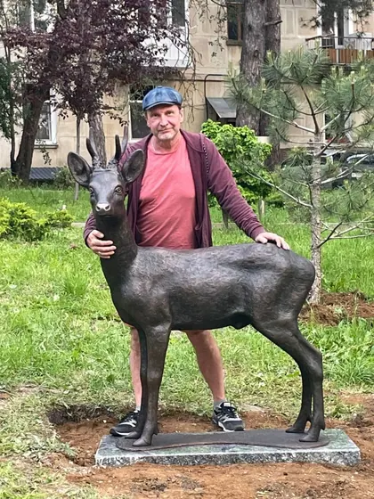
Парковая скульптура оленя

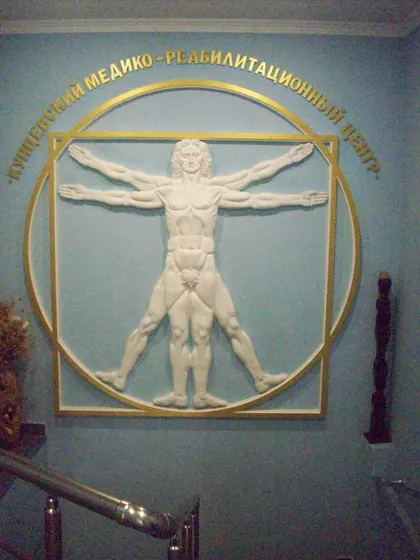
Гармония

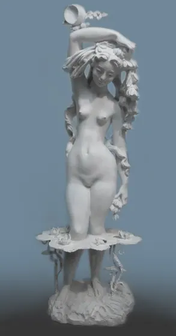